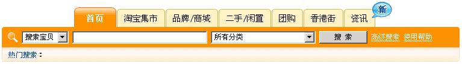
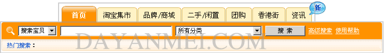
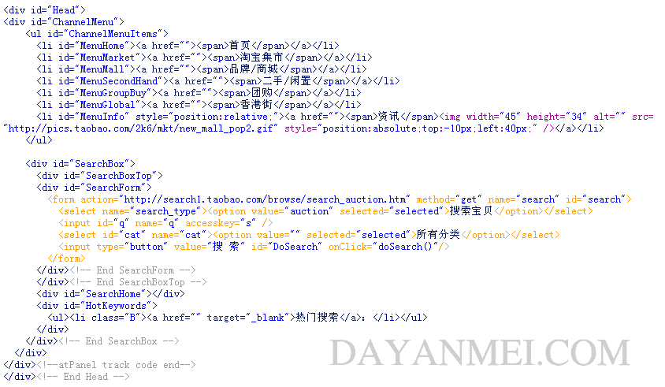
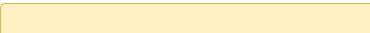

div+css布局实例淘宝分析(二)
在前面我们分析了淘宝网页的顶部代码,这次我们来分析淘宝网页的导航条,对于刚入门学DIV,CSS布局的朋友来说,不知道从那里下手,我以为从分析优秀 网站的源代码来学习div,css布局是一个不错的方法,这篇div+ css布局教程是我自己在边分析边学习中总结出来的,如果你要转载请注明出处,另外本人特别声明:本教程只是分析淘宝网站的HTML,CSS源代码,作为 一个教程的例子,达到学习DIV+CSS排版的效果,请勿模仿淘宝,或者仿照淘宝制作网站,由此产生的纠纷和责任自负,谢谢,这是第二篇,淘宝导航条排版 方式 http://www.dayanmei.com/upload/2.nav.default.gif http://www.dayanmei.com/upload/2.nav.view.gif http://www.dayanmei.com/upload/2.nav.html.gif
我们还是先来看看网页的实际样式

我们把它分为两个块(其实是三个块)

下面是源码的截图,还是采用Head容器,为了方便查看,很多无关的代码我已经省略了

html源码中 div,css分析
1.#Head在上一节中已经说到,text-align:center;是文本居中对齐
#Head{
text-align:center;
}
2.#ChannelMenu定义了宽度为760px,外补丁上下,左右均为0px,文本居中对齐
#Head #ChannelMenu{
width:760px;
margin:0 auto;
text-align:center;
}
3.#ChannelMenuItems容器在#ChannelMenu内,但#ChannelMenu没有什么限制,所以直接写在容器#Head下面也 是一样的,当然也可以这样写#Head #ChannelMenu #ChannelMenuItems {}效果是一样的,
#Head #ChannelMenuItems{
width:520px;
height:33px;
margin:0 auto;
}
这里定义的是宽度520px,高度33px,外补丁为0px
4.ul跟#ChannelMenuItems一样,虽然在那些容器内,但他们不对ul限制,所以可以直接写在#Head下面,甚至你可以将前面的#Head去掉
#Head ul{
list-style-type:none;
margin:0;
padding:0;
}
这里设定列表样式为 none,即不显示,外补丁,内补丁为0px
5.设定li,在特定的容器#Head #ChannelMenuItems里的样式
#Head #ChannelMenuItems li{
float:left;
height:33px;
margin-right:1px;
}
从左边浮动,高度为33px,右补丁为1px
6.设定链接样式
#Head #ChannelMenuItems a{
display:block;
float:left;
height:33px;
background:transparent url(images/cm_l.gif) left top no-repeat;
text-decoration:none;
}
块状方式显示,左浮动,高度为33px,背景左上排列,不重复,此设定对其下面的 a:link,a:visited,a:hover,a:active均起作用
7.通过添加span属性,用于显示右边图片背景
#Head #ChannelMenuItems a span{
display:block;
float:left;
height:33px!important;
height: 22px;
height /*ie55*/: 33px;
padding:11px 12px 0;
background:transparent url(images/cm_r.gif) right top no-repeat;
text-align:center;
color:#000;
font-size: 14px;
}
以块状方式显示,左浮动,高度为33px(我也有些糊涂了,怎么三个height?),padding有三个参数时,我们回忆一下:第一个参数是上,第二 个参数是左右,第三个参数是下,说明上内补丁为11px,左右内补丁为12px,背景为右上不重复排列,文字居中颜色为#000,大小为14px
我们再来看看左边的背景图和右边的背景图
左边: 
http://www.dayanmei.com/upload/cm_l.gif
http://www.dayanmei.com/upload/cm_r.gif
{kind=link}